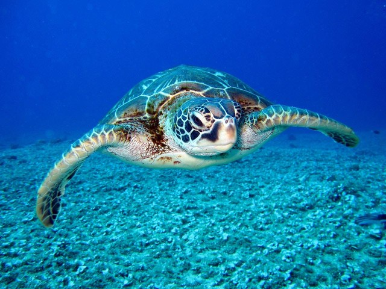
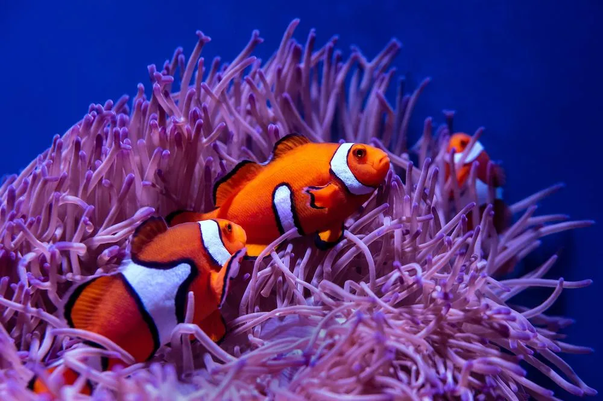
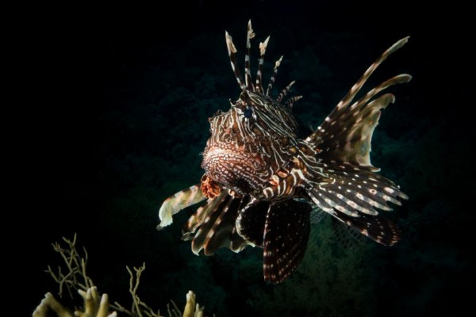

Penyu adalah hewan yang banyak ditemukan bertelur di beberapa pesisir pantai di Indonesia sejak dahulu

Ikan badut ini dapat dikenali dengan warna jingganya ikan ini tumbuh mencapai 8cm serta termasuk dalam ikan terpopuler didunia.

Lion-Fish atau volitans adalah ikan berbisa milik keluarga yang Scorpaenidae terhjemahan harifah berarti ikan kalajengking.